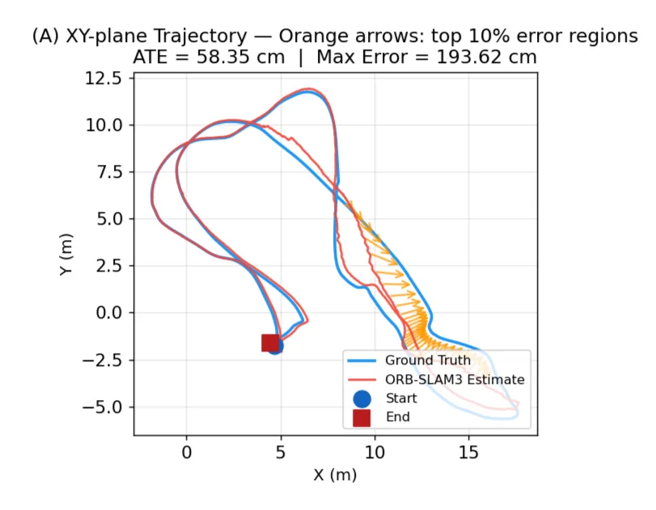
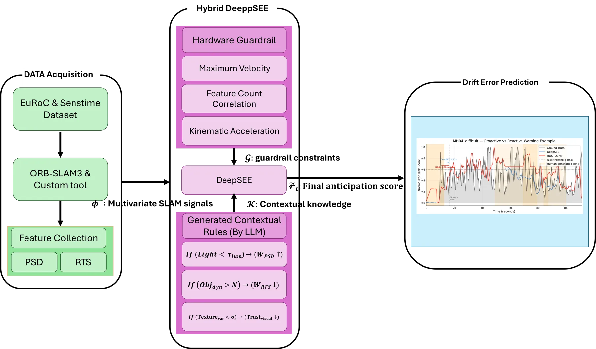
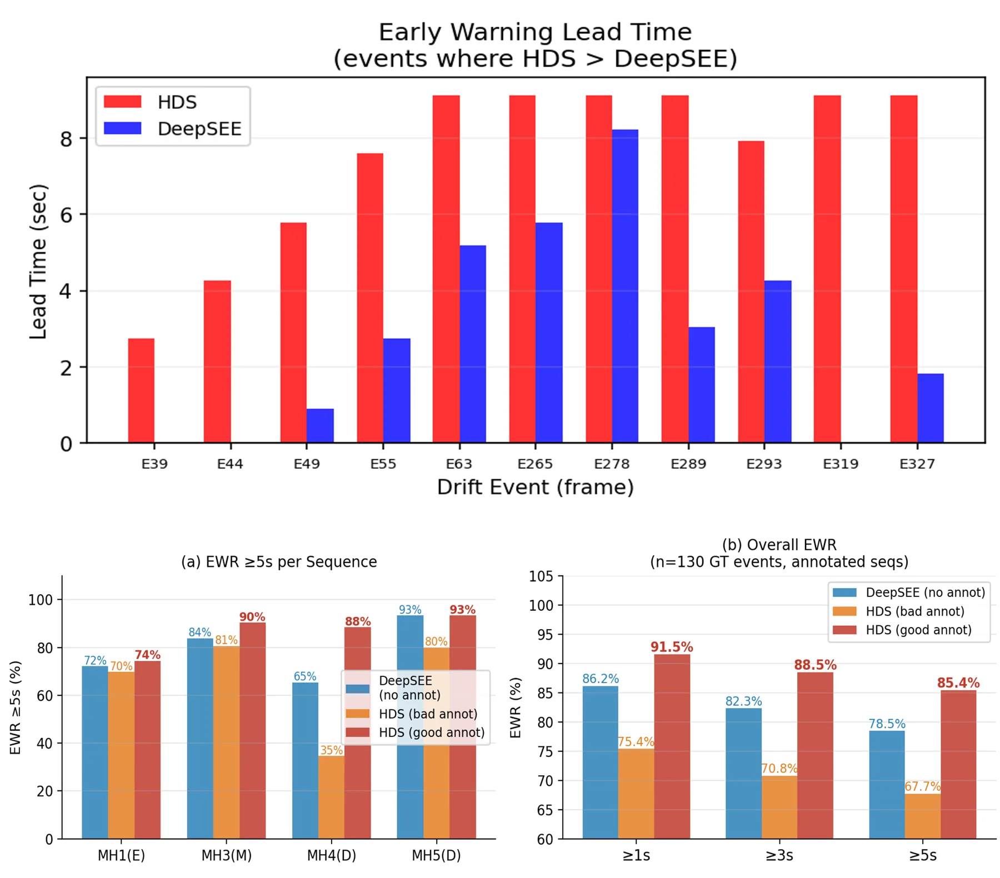

人在回路神经符号漂移预判：面向可靠视觉 SLAM 的监督层
Human-in-the-Loop Neuro-Symbolic Drift Anticipation for Reliable Visual SLAM
概念框架：PSD+RTS 特征经 DNN 给风险，LLM 把专家语言翻成符号规则，LNN 融合规则与硬件护栏得分，仅做决策级监督、不改位姿；EuRoC MH_04 上平均预警 6.2 s（DeepSEE 2.4 s），良标注下 EWR 峰值 91.5%。
lead time
EWR
EWR≥5s
作者、单位与技术谱系 · Research context
作者与单位
研究脉络
- DeepSEE（Hu et al., MobiCom 2023）/ SEESys（Hu et al., SenSys 2024）方法基座关系：在线位姿误差/漂移估计是本文神经风险模块的概念前身与主要对照对象。[论文 §2.2、§3.6]
- Logical Neural Networks（LNN）方法基座关系：以可微逻辑推理融合显式规则，是本文神经符号监督整合模块的理论基础。[论文 §2.3、§3.4]
- ORB-SLAM3（Campos et al., 2021）问题上游关系：作为被监督的几何 V-SLAM 后端范式，定义了‘反应式回环、无法保证有界’的问题背景。[论文 §2.1]
合作网络
- 仁川国立大学内部同系署名Junhyun Nam → Wonse Jo关系：共同署名（同单位）[arXiv 首页署名]
- 仁川国立大学研究基金资助Incheon National University → Hybrid DeepSEE (HDS) 项目关系：资助关系（机构—项目）[论文首页资助说明]
- 与 DeepSEE/SEESys 作者群的关系性质HDS（Nam & Jo） → DeepSEE/SEESys 作者群（Hu, Scargill, Gorlatova 等）关系：技术依赖与引用（非共同署名）[论文 §2.2 与参考文献 Hu et al. (2023/2024)]
作者与单位来自论文首页署名；谱系依据正文引用标注为‘基于来源的解读’。网络仅记录共同署名、机构资助与明确的技术依赖/引用，未发现与 DeepSEE/SEESys 作者群的公开共同署名边，故不推断合作或师生关系。
方法本质拆解 · What actually changed
是不是微调？
论文未给出任何训练细节：作为概念框架，神经风险估计器 f_θ 的网络结构、训练数据、损失与是否微调均未报告；LLM 与 LNN 也只给出角色描述（翻规则、融合分数）。因此‘是否微调’无法由原文确认，属待核验项；论文把权重自适应更新明确列为未来工作。
有没有额外约束？
引入了符号规则约束与硬件护栏约束：由 LLM 把人类语言转成形如 (I_avg<τ_lm)⇒(W_PSD↑) 的符号规则 ℛ_k，以及最大速度/加速度等物理先验 𝒢_j，二者以权重 λ_k、γ_j 进入融合分 r̃_t。约束作用在风险评分与决策级告警上，而明确不修改 SLAM 后端的位姿估计变量。
推理/后端到底做了什么？
推理期监督层独立于 V-SLAM 估计器：持续计算 r̃_t 并实时评估定位可靠性，超阈值时触发降速/重定位/告警等高层动作；LLM 的符号推理异步执行，只在环境显著变化或用户显式输入时调用，以避免影响底层 V-SLAM 的实时约束。后端状态估计本身不被修改或纠正。
方法本质是什么？
本质是在 SLAM 估计器之上叠加一层‘可解释的漂移预判与决策支持’：用频域/时延指标做神经风险、用语言桥把专家直觉固化为符号约束、再用可微逻辑网络把两者与硬件护栏融合成单一风险分。它改变的是对‘估计可靠性’的显式、可审计表达，而不是状态估计本身；没有做位姿后端优化，也没有把约束回灌到估计变量。
输入为 V-SLAM 内部信号（PSD/RTS）+人类语言上下文+硬件护栏；改变的位置是在估计器之外新增神经风险估计、LLM 符号编码与 LNN 融合的监督层；合并动作是按权重融合神经分/符号规则/物理约束得到 r̃_t 并仅做决策级触发；直接效果是 EuRoC MH_04 上把漂移预警提前到平均 6.2 s、良标注 EWR 峰值 91.5%（证据有限，待核验）。

桥接价值Bridge
桥接价值
HDS 对用户主线的价值不在其（尚不完整的）技术实现，而在它提出的问题框架：把‘漂移/退化预判’从被动事后校正提升为在线、可解释的监督层，且明确不修改 SLAM 后端位姿变量——这与用户重视的‘可靠性、可审计、披露不确定性’高度同构。它的三模块划分（神经风险 + 语言→符号规则 + 神经符号融合）给出一种把不确定性与物理/运动学约束显式写进监控信号的模板，可迁移到融合/PPP 的在线健康监测与退化预警。
方法与模块Method
方法摘要
HDS 由三个模块组成：(i) 神经漂移风险估计——从 V-SLAM 内部指标构造特征集 Φ_t，论文突出两个指标：功率谱密度（PSD，用于探测高频谱衰减即纹理缺失/运动模糊）与 Real-Time Scalability（RTS，监控跟踪时延与硬件占用），由 DNN f_θ 给出基线风险 r̂_t；(ii) 语言中介的符号编码——把人类语音经 STT 转文本，由 LLM 驱动的 Dynamic Logical Updater 翻成符号规则 ℛ_k（例：(I_avg<τ_lm)⇒(W_PSD↑)），实现自适应敏感度调节；(iii) 神经符号监督整合——用 Logical Neural Network 把神经风险、规则与硬件护栏约束 𝒢 融合成最终预判分 r̃_t=σ(w_n·r̂_t+Σλ_k·ℛ_k+Σγ_j·𝒢_j)。最终分交给独立于估计器的监督层，仅在超阈值时触发降速/重定位/告警。
可迁移模块
可迁移模块有三：(1) 用频域（PSD）与时延/占用（RTS）这类低成本内部指标作为退化前兆特征，可直接在融合/PPP 数据管线中提取并做在线监测；(2) ‘语言→符号规则’接口——把专家对环境的定性描述（低照度、重复纹理）转成可解释的、可调权重的阈值型规则，作为硬约束层而非黑箱；(3) ‘监督层与估计器解耦、不改位姿’的设计原则——把健康监测与状态估计严格分层，正是用户所强调的‘证据与推断分离、决策可审计’。需注意三者在本文均停留在概念层面。

证据Evidence
关键证据与数字
论文在 EuRoC MAV 的 MH_04_difficult 序列上，对比标准 Random Forest 基线与 DeepSEE：跨主要漂移事件（如 E39 至 E327），HDS 平均提前 6.2 s 预判显著跟踪退化，而 DeepSEE 平均 2.4 s 或对某些事件完全未能预判。早期预警率（EWR）在高质量专家标注（“good annot”）下于 ≥1 s 时间窗达峰值 91.5%，即使在更严格的 ≥5 s 条件下仍保持 85.4%；对照 DeepSEE 无上下文辅助在 ≥5 s 阈值下降到 78.5%。以上数字来自论文 §3.6 的单一序列评估，框架本身为概念设计，完整的权重（w_n, λ_k, γ_j）在线自适应策略被作者列为未来工作，故相关绝对值均标注‘待核验’。
边界与下一步Limits & Next Step
边界与风险
作者明确承认的边界：这是概念框架（conceptual framework），融合权重 w_n/λ_k/γ_j 只给出初始化原则、在线自适应更新被列为未来工作；性能高度依赖人类语言输入的质量与一致性，含糊或低质量标注会降低系统有效性；尚未在真实机器人上部署（未来拟上人形平台）。我们补充的风险：(a) 证据仅单序列（EuRoC MH_04_difficult）、单场景，缺少跨环境/跨 SLAM 后端的泛化验证；(b) PSD/RTS 与随机森林/DeepSEE 的对比协议、特征与超参未在正文展开，阈值 τ 的取值与敏感性未知；(c) LLM 异步调用的时延与失效模式未量化，须核验其是否满足实时监督的确定性要求。
下一步实验
建议的最小对照：(1) 在自建管线中用 PSD/RTS 特征复现二分类漂移预警，做‘仅神经风险 vs 神经+符号规则’的最小 A/B，量化符号约束在 OOD 场景的边际贡献；(2) 跨序列验证（EuRoC 多序列 + 不同 V-SLAM 后端）EWR 与提前量的稳定性，并报告失败事件；(3) 把该监督层与用户的融合/PPP 后端对接，检验‘不改位姿、仅决策级告警’是否能在不破坏估计一致性的前提下提供可用的退化预警。当前均以论文报告的单一序列数字为起点，具体协议待核验。

